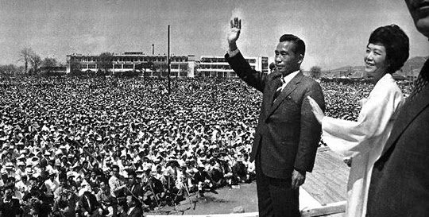
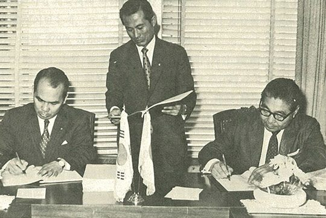
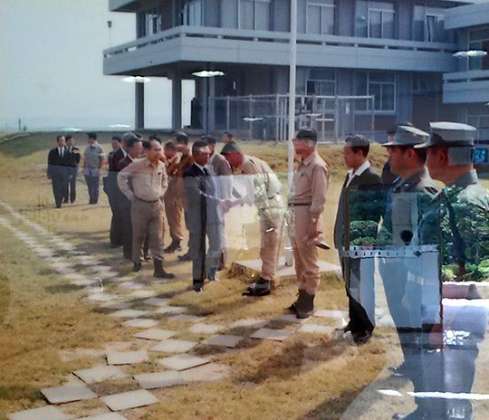

연재일 2015-01-23출처 조선일보 프리미엄조선 연재
1971년 새해 영일만에는 거대한 철골 구조물이 우후죽순처럼 솟아올랐다. 바깥세상은 온통 대통령선거에 관심이 쏠리는 중이었다. 3선 개헌을 통과시킨 박정희가 확고부동한 공화당 후보로 정해져 있었고, 신민당은 김영삼‧김대중‧이철승의 ‘40대 기수 3파전’을 거쳐 김대중을 후보로 내세우고 있었다.
박정희 대통령의 1971년 대선 유세 모습
신민당이 서울의 높은 지지율을 바탕으로 승리를 호언장담하는 가운데, 공화당은 그래도 정권을 사수할 수 있다는 계산과 예상을 거머쥐고 있었다. 선거를 ‘전투’라 여기는 정치동네는 요새도 ‘돈’을 ‘총알’이라 부른다. 사방을 두리번거리는 공화당 재정위원장이 한창 설비 구매 중인 포스코를 큼직한 총알 창고의 하나라고 찍었다. 바야흐로 박태준의 포스코에는 ‘정치적 외풍’이 들이닥치기 시작하는 계절이었다.
이른바 공화당 4인 체제의 핵심인 재정위원장 김성곤. 그가 박태준을 자택으로 불렀다. 거실에는 여러 사람이 차례를 기다리고 있었다. 정치헌금을 내려고 초대받은 사람들 같았다. 서로 잘 아는 박태준과 김성곤은 가벼운 인사를 주고받았다. 먼저, 주인이 본론을 꺼냈다.
“다가오는 대선을 생각해서 박 사장도 이번에 정치자금을 내주시면 고맙겠습니다. 다음 달에 도쿄에서 포철의 설비 입찰이 있다지요?”
“예. 계속되는 입찰들 중에 하나지요.”
“마루베니로 낙찰해주세요. 무슨 말인지 아시지요?”
손님이 얼굴을 찌푸렸다. 주인은 짐짓 웃었다.
“이것이 대선에서 각하와 여당을 돕는 일입니다.”
“포철은 어떤 정치자금 조성에도 관여하지 않겠다는 것이 저의 확고한 방침이고, 각하께서도 그렇게 알고 계시며 또 그렇게 하라고 하셨습니다.”
두 사람 사이로 짧지만 무거운 침묵이 지나갔다. 손님이 심각하게 한마디를 더 보탰다.
“포철이 정치헌금 때문에 제대로 완공되지 못하면, 그때 가서 책임은 누가 지는 겁니까? 국가적 제일 목표인 근대화는 또 어떻게 되겠습니까?”
주인이 눈가에 주름을 새겼다.
“모든 일에는 선후가 있지 않습니까? 선은 각하가 승리하는 것입니다. 박 사장 자신과 포철, 그리고 국가의 장래사를 생각해서라도 마루베니로 낙찰해주세요.”
“자격을 갖춘 응찰자들 중에서 최저 입찰자를 선정하는 것이 우리 회사의 방침입니다. 마루베니가 그런 자격을 갖추면 당연히 낙찰될 것입니다.”
두 사람은 껄끄러운 기분 그대로 헤어졌다. 박태준의 원칙에 의해 마루베니는 당연히 탈락했다. 그리고 며칠이 지났다. 박태준은 다시 악역을 맡은 이에게 불려갔다.
“다음 입찰에서는 꼭 마루베니를 도와주세요.”
“마루베니의 입찰가는 최저입찰가보다 무려 20%나 높았습니다. 특정회사에 특혜를 줄 방법은 없습니다. 그런 식으로 하다가는 지금의 빠듯한 예산으로 포철을 제대로 완공할 수 없습니다. 선도 알고 후도 압니다. 포철에는 전혀 여유가 없습니다.”
박태준은 ‘여유가 없다’고 표현했다. 속마음은 달랐다. ‘조상의 혈세로 건설하는 제철소이기 때문에 우리는 목숨을 걸고 있다’는 일장 훈계라도 하고 싶었다.
“내가 모르는 바 아닙니다. 각하가 선거에서 이겨야만 나라도 발전하고 우리도 제자리를 지킬 수 있는 거 아니오? 그러니 다음에는 무조건 마루베니를 밀어주세요.”
일본 미쓰비시와 분괴공장 설비 공급 계약을 체결하는 모습
그러나 마루베니는 번번이 입찰에서 떨어졌다. ‘20%’ 또는 그 이상의 정치자금을 더 얹었으니 그쪽으로 떨어질 국물조차 없었다. 그때마다 박태준은 같은 장소로 불려가야 했다. 무려 다섯 차례였다. 내용은 하나같이 특정 업체에 특혜를 주라는 압력과 회유였다. 하지만 그는 소신을 굽히지 않았다. 답답해진 쪽은 정치자금의 악역을 충실히 수행해야 하는 권력자였다. 끝내 그가 박태준에게 역정을 부렸다.
“결국 한 번도 배려하지 않았네요. 내가 내 주머니를 채우려고 정치자금을 모으는 것이 아니잖소? 내가 그렇게 부탁했는데도 끝까지 우리 당을 도와주지 않았소. 뭡니까? 혼자만 독불장군으로 나가면 정권이 유지되고 근대화가 된다는 거요? 이거 참, 소통령이라도 된다는 거요?”
“그런 별명을 붙이시려거든 소통령보다는 차라리 중통령이라고 불러주시오.”
박태준은 부드럽게 김성곤의 말을 받아넘겼다.
박태준은 공화당 재정위원장의 임무를 모르는 바 아니었다. 아니, 너무 잘 알고 그 쫓기는 심정을 충분히 이해하고 있었다. 그래서 탓하고 싶지도 않았다. 다만 박태준은 ‘한 군데서만 틈을 보여도 둑이 무너지게 된다’는 긴장의 끈을 꽉 조이고 있어야 했다. 그것이 포철을 성공의 언덕으로 끌고 올라가는 매우 중요한 리더십의 하나라는 판단을 하고 있었다.
공화당 재정위원장이 박태준과의 버거운 씨름을 포기하는 자리에서 내뱉은 그 ‘소통령’ 소리를 박태준은 몇 번이나 더 들어야 했다. 국회였다. 예산 문제 따위로 국회에 불려나간 박태준은 “저기 소통령 가시네.”라는 야유와 조롱이 손가락질과 함께 표창처럼 뒤통수에 꽂히는 느낌을 받아야 했다. 그러나 그는 멈칫거리거나 돌아보지 않았다. ‘소통령’을 훈장이라 여기며 ‘이왕이면 중통령이라 부를 것이지’ 하고 배포를 부렸다.
박태준이 박정희의 ‘종이마패’를 가슴에 품고 ‘모든 정치자금 요구’를 철저히 배격하여 ‘최저비용 최고품질’이라는 설비구매 원칙을 관철한 것은 포항종합제철의 성공적인 건설과 합리적인 경영을 담보해주는 긴요한 요인이 되었다. 만약 박태준이 ‘소통령’이라는 비아냥거림에 대해 ‘중통령’이라 불러달라고 맞설 수 있는 기개와 신념을 갖추지 못했더라면? 박태준이 그것들을 갖추었더라도 박정희가 옹호해주지 않았더라면? 포스코는 창업 단계에서부터 크게 휘청거릴 수밖에 없었을 것이다.
1971년 9월 2일 영일대에서 포철 직원들을 격려하는 박정희 대통령


